Прескіт
Усе, що потрібно для матеріалу про Maintra: логотипи, скріншоти, готові тексти й перевірений фактаж. Нічого погоджувати не треба — умови нижче.
Фактаж
Якщо якоїсь цифри тут немає — напишіть, і я дам її з датою. Краще так, ніж припущення.
| Що це | Цифрова сервісна книжка для авто й мотоциклів |
| Платформи | iOS та Android |
| Поточна версія | 1.6.0, вийшла 14 вересня 2026 (Google Play vc29 · App Store build 55) |
| Мови інтерфейсу | українська, англійська, польська, французька, італійська, іспанська |
| Типи техніки | авто й мотоцикли |
| Тарифи | Безкоштовно — одне авто, вся історія, заправки, план, нагадування, шини, один документ на авто. Pro та VIP — більше авто й AI-функції (розпізнавання чеків, план, аналіз фото шин, чат). |
| Офлайн | Так. Дані зберігаються на пристрої; синхронізація — коли зʼявиться звʼязок |
| Реклама й трекінг | Немає |
| Стек | React Native (Expo), Supabase, Claude для AI-функцій |
| Розробник | ROK (Кирило Розбейко), один автор |
| Контакт | rokops13@gmail.com |
| Сайт | maintra.me |
| App Store | apps.apple.com/app/maintra/id6775876731 |
| Google Play | play.google.com/store/apps/details?id=com.maintra.app |
Тексти
Копіюйте як є. Усе те саме одним файлом: texts.txt.
Одне речення
Maintra — це цифрова сервісна книжка для авто й мототехніки: фото чека зі СТО автоматично стає записом з деталями, роботою й сумою.
50 слів
Maintra — це цифрова сервісна книжка для авто й мотоциклів. Застосунок розпізнає чек зі СТО чи заправки будь-якою мовою і перетворює його на повний запис, будує план обслуговування за пробігом, зберігає документи в зашифрованому сейфі та веде облік шин за датою виробництва. Працює офлайн, без реклами й без трекінгу.
150 слів
Maintra — це цифрова сервісна книжка для авто й мотоциклів. Застосунок розпізнає чек зі СТО чи заправки будь-якою мовою і перетворює його на повний запис: деталі, роботи, суми, пробіг. Далі він будує план обслуговування, рахує реальну витрату пального, зберігає документи в зашифрованому сейфі й веде облік шин — включно з датою виробництва, бо гума дубіє за віком, а не за пробігом.
Застосунок виріс із власної потреби розробника: він тримає на ходу старий Mitsubishi Pajero, і йому набридла коробка з чеками в бардачку. Maintra працює офлайн, не показує реклами і не має трекінгу; історію обслуговування можна будь-коли вивантажити й забрати з собою.
Безкоштовно: одне авто, вся історія обслуговування, заправки, план, нагадування, шини й документи. Платно — лише те, за що розробник сам платить третім сторонам: розпізнавання чеків, AI-план обслуговування та аналіз фото шин.
Цитати розробника
Беріть будь-яку, питати не треба.
«Великі ремонти памʼятаєш і без застосунку. Губиться дрібне: який саме фільтр, скільки залили, коли востаннє. Через три роки це вже не історія авто, а купа чеків у бардачку.»
«Протектор перед зимою перевіряють усі, дату виробництва майже ніхто. А після шести років гума дубіє незалежно від того, скільки на ній міліметрів.»
«Техпаспорт і страховка — це ПІБ, адреса, VIN і підпис в одному файлі. Тому документи шифруються на телефоні до того, як кудись поїдуть: ключ є тільки у власника, і кнопки "відновити доступ" не існує. Це незручно — і це навмисно.»
«Я не хотів робити ще одну підписку. Усе, що нічого не коштує в обслуговуванні, лишається безкоштовним. Платне — тільки те, за що я сам плачу третім сторонам.»
Boilerplate — у кінець статті
Maintra — цифрова сервісна книжка для авто й мотоциклів: розпізнає чеки зі СТО, веде план обслуговування, шини й зашифровані документи. Працює офлайн, без реклами. Розробник: ROK (Кирило Розбейко), один автор. Завантажити: App Store та Google Play, безкоштовно. maintra.me
Логотип та іконка

{kind=link}
{kind=link}
{kind=link}
Скріншоти
Скріншоти українською. Англійські — на English version цієї сторінки. Клік відкриває повний розмір.
Чисті скріншоти
Просто екран застосунку: без рамки телефона й без маркетингового тексту. Для статті беріть ці — слоган поверх картинки виглядає як реклама.
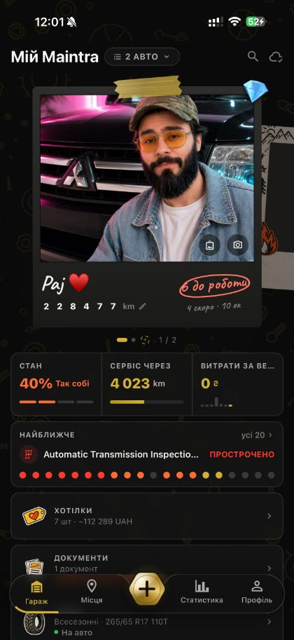
{kind=link}
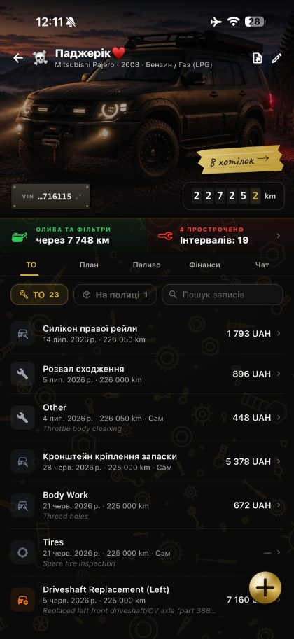
{kind=link}
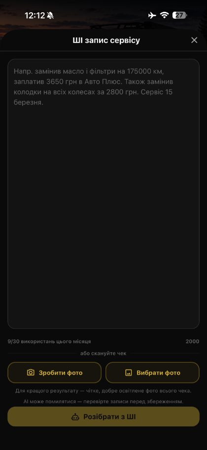
{kind=link}
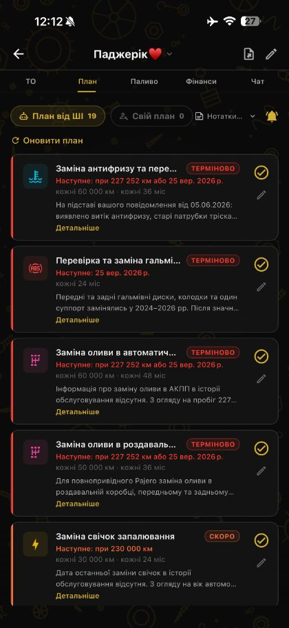
{kind=link}
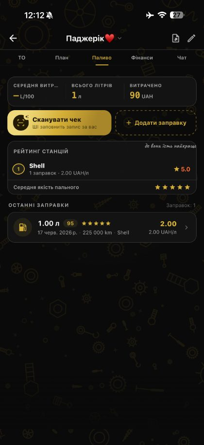
{kind=link}
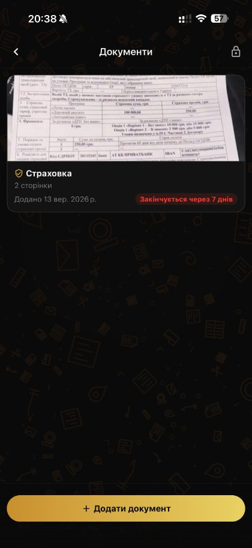
{kind=link}
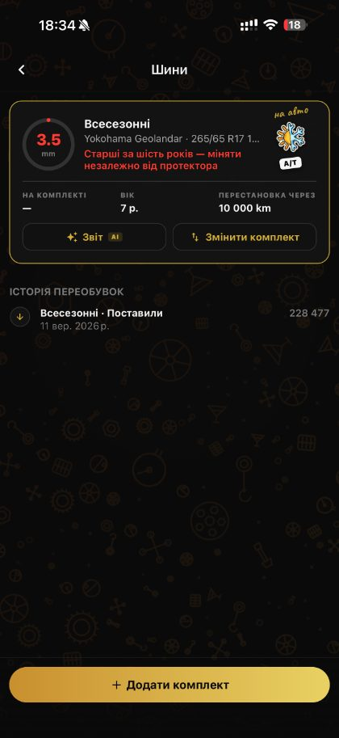
{kind=link}
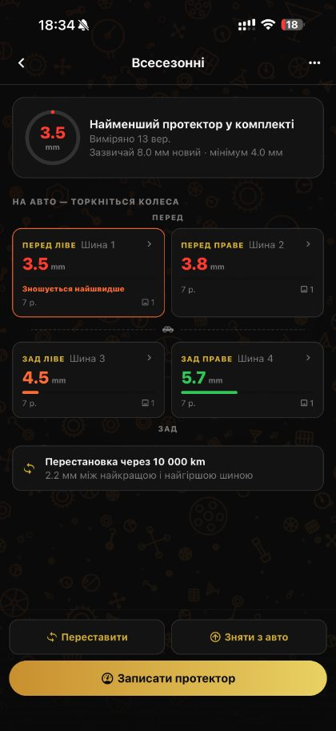
{kind=link}
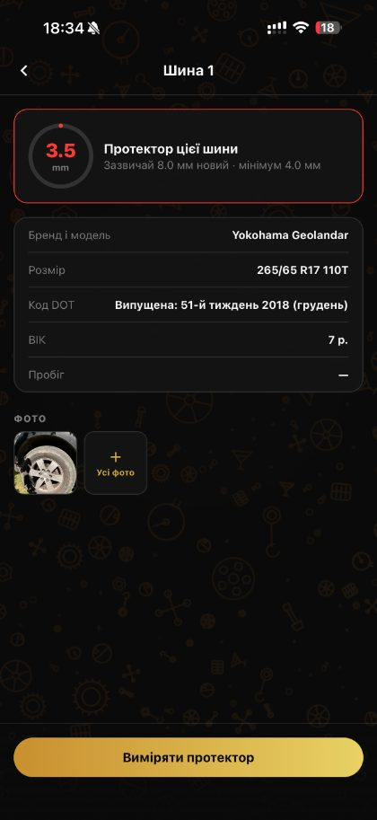
{kind=link}
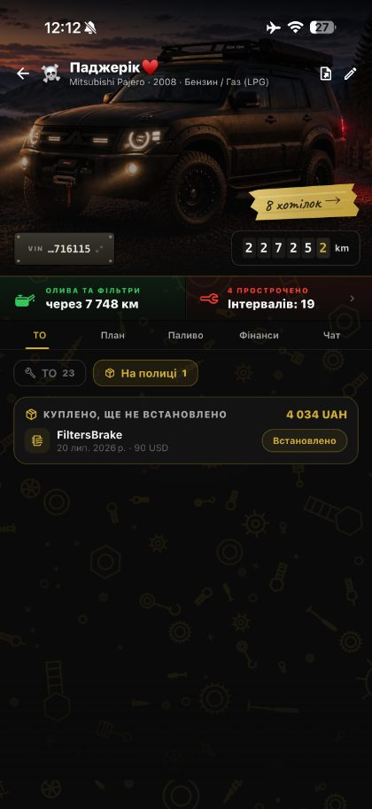
{kind=link}
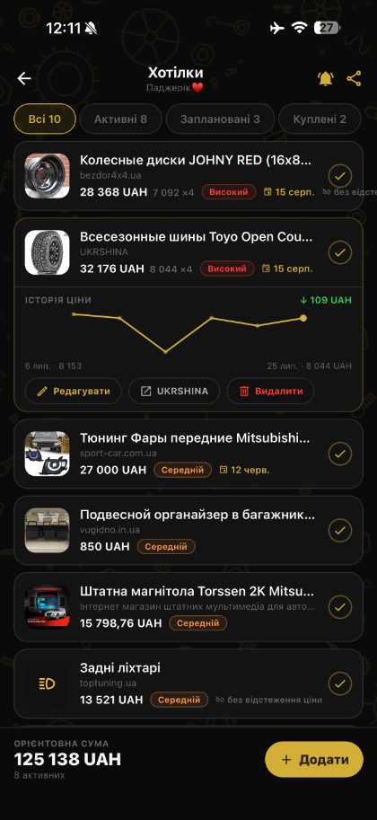
{kind=link}
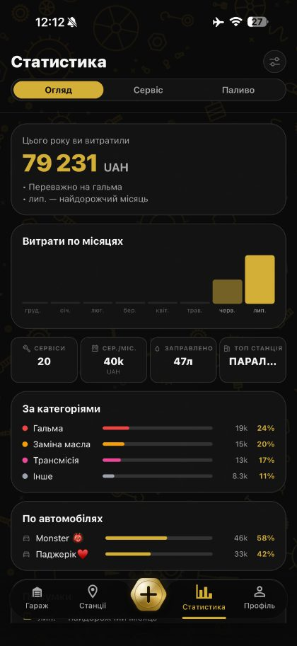
{kind=link}
{kind=link}
Сторові скріншоти
Ті самі екрани, як вони виглядають у App Store та Google Play — у рамці й зі слоганом.
{kind=link}
{kind=link}
{kind=link}
{kind=link}
{kind=link}
{kind=link}
{kind=link}
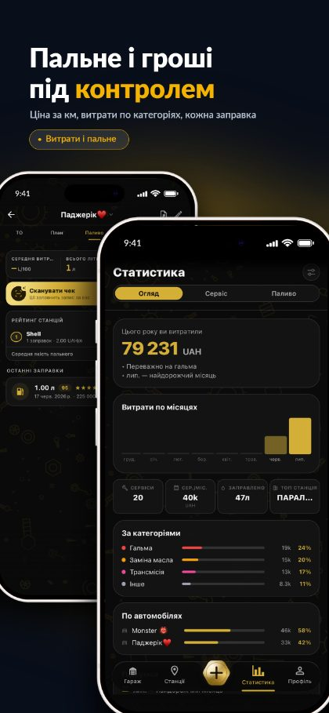
{kind=link}
Відео
Готується: запис екрана на 20–40 секунд без музики й голосу — один сценарій, фото чека перетворюється на запис. MP4 файлом, окремо GIF на 5 секунд для телеграм-каналів.
Фото розробника
У розробника в телефоні більше фото запчастин, ніж власних — оце те, що знайшлося.
{kind=link}
{kind=link}
Забрати все одразу
Два архіви — по одному на мову. У кожному: логотипи, всі скріншоти тією мовою, фото розробника й тексти. Відео додам до архіву, щойно буде.
Питання
Пишіть на rokops13@gmail.com — відповідаю на всі листи. Якщо потрібен матеріал, якого тут немає, або цифра з актуальною датою — так само.